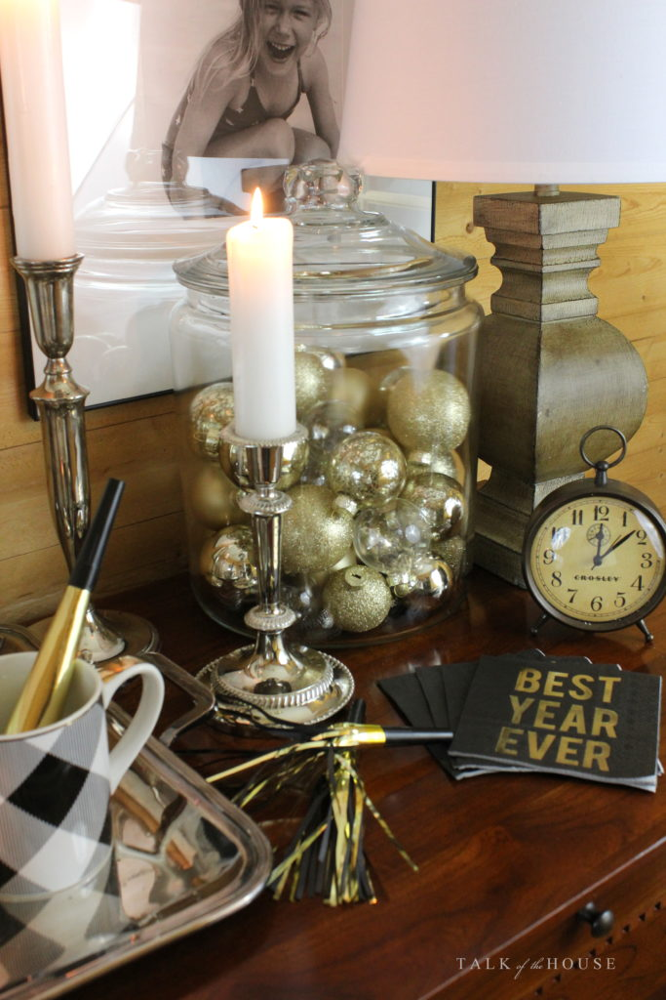

.png)
.PNG)
.PNG)
.PNG)
.PNG)
.PNG)
.JPG)
.JPG)
.PNG)
.PNG)


Happy New Year to you! I hope that all of your holidays have been merry and bright as we have finished up 2016. It was so very nice to have our children here for Christmas, (some unexpectedly!) but two of them traveled back to their homes before New Years Day. Our law school son is here for another week, and we are still greatly enjoying having him home.
It seems our New Years Eve partying has just rolled on into New Years Day. Why stop a good thing, right? 🙂 I wanted to share a bit of the decorating from it before you are totally uninterested in January and have Valentine’s Day on your brain. (Can you believe Target already has Easter candy out?!)
But let me warn you about the photos today. It has rained and rained and rained here…all night last night, all day today, and they are predicting more for all day tomorrow. Rain means no sunlight, and that is not good for photography in this house. My oldest son gave me a photographer’s light kit for Christmas, and I experimented with it in these shots, but I have no idea what I am doing with it! So the colors are really off…much practice is obviously needed. So please overlook the strangely lit photos here today.
 Okay, the red from Christmas has been put away for a couple of weeks. I am giving us all a breather from it until it is pulled out again for Valentine’s Day. In its place is simply black and white…kind of a “clean slate” to start the new year.
Okay, the red from Christmas has been put away for a couple of weeks. I am giving us all a breather from it until it is pulled out again for Valentine’s Day. In its place is simply black and white…kind of a “clean slate” to start the new year.
 Gold glitter stars and ornaments were my party decorations for the New Years celebration…
Gold glitter stars and ornaments were my party decorations for the New Years celebration…

with a few clocks and calendars thrown in here and there. 🙂
 We had a small party for New Years Eve, and my son and I prepped all the food in about an hour and a half. I knew I wanted to have plenty to munch on last night and over the next couple of days, so we made a lot. The table below is New Years Eve – Take 2 (aka our lunch today. 🙂 )
We had a small party for New Years Eve, and my son and I prepped all the food in about an hour and a half. I knew I wanted to have plenty to munch on last night and over the next couple of days, so we made a lot. The table below is New Years Eve – Take 2 (aka our lunch today. 🙂 )
 We just added to the serving dishes today at lunch and partied again.
We just added to the serving dishes today at lunch and partied again.
 We do not drink any alcohol here, so the bottles below are of Martinelli’s Sparkling Cider. I have been hoarding those individual serving size bottles…grabbing them every single time I have seen them in our local Walmart. (Sorry if you have been looking for them. 🙁 ) They are just perfect for New Years Eve celebrations.
We do not drink any alcohol here, so the bottles below are of Martinelli’s Sparkling Cider. I have been hoarding those individual serving size bottles…grabbing them every single time I have seen them in our local Walmart. (Sorry if you have been looking for them. 🙁 ) They are just perfect for New Years Eve celebrations.
 The dollar spot area in Target was a treasure chest of things for our party. I used pages from a $3 desk calendar for the “runner” and stood up a $1 calendar as part of the centerpiece (and another one was displayed on the foyer buffet.) They also had the noisemakers in packs of 4 for $1 along with black and gold dotted food picks.
The dollar spot area in Target was a treasure chest of things for our party. I used pages from a $3 desk calendar for the “runner” and stood up a $1 calendar as part of the centerpiece (and another one was displayed on the foyer buffet.) They also had the noisemakers in packs of 4 for $1 along with black and gold dotted food picks.
 The table above was the food from last night and lunch today. Tonight’s dinner table continued the theme with black and white and clocks and calendars. The pages from another $1 calendar became this table’s “runner’…
The table above was the food from last night and lunch today. Tonight’s dinner table continued the theme with black and white and clocks and calendars. The pages from another $1 calendar became this table’s “runner’…
 and Target’s 2-year pocket planners (also only $1!) made great New Years Day party favors.
and Target’s 2-year pocket planners (also only $1!) made great New Years Day party favors.
(And no I am not affiliated with Target. 🙂 )

 That brings us to the end of the holiday posts for awhile. I will be back with a wrap up of all the 2016 posts later this week so I hope you will pop in again for that. 🙂
That brings us to the end of the holiday posts for awhile. I will be back with a wrap up of all the 2016 posts later this week so I hope you will pop in again for that. 🙂
 Until then, I send you wishes for a happy and healthy 2017!
Until then, I send you wishes for a happy and healthy 2017!
🙂
See you soon!


.PNG)
So lovely to be able to reflect back over your year like this Kelly. Thanks for sharing it with us ..I’ve really enjoyed reading it.
Hope you’re having a lovely weekend. We’ve had a dusting of snow but it’s just wet now which is disappointing. Meeting up with the family later for lunch though, which will certainly brighten the day! 🙂
Rosemary
———————————————————————-
Oh how I wish we would get some snow this year…even a light dusting would be so nice. We did not get one single flake last winter. Fingers crossed for this year (although according to the long range forecast we will have temps in the sixties until the end of the month.) Your Sunday lunch sounds nice! Enjoy the time with your family, and thank you for stopping by Rosemary! 🙂
Kelly
Is that a full calendar, the one that looks like a chalkboard? I love that. Target, or someplace else?
Lovely setting. 🙂
——————————————————————
Yes, Carole it IS a full year’s calendar, and I did get it in Target…either $1 or $3 right at the front in the “dollar bin” type area.
Kelly
Kelly: I was saving some of my favorite emails (yours are terrific) and I really like the double pendent lights with shades (3 candles each)) that you have over your table. Where did you find it? My kitchen and eating area are visible from my more formal living room with primarily silk shades, so might be a good fit.
——————————————————————-
Hi Libby Jo! After months and months of shopping to find just the light for that space I ordered it from Lighting New York…and of course it was backordered for months when I ordered it. LOL But it did eventually get shipped to us. Here is the link: http://www.lightingnewyork.com/product/visual-comfort-e-f-chapman-classic-island-lighting-sl5816hab-np.html#que
Kelly
Hi Kelly …I love the back and gold! Yout table setting looks so elegant. As always, you’ve come up with some great ideas. I especially love the clocks!
Having been away from home for a week I’ve decided to let Christmas continue for a few more days, mainly so I can relax and enjoy the decorations 🙂
Take care and enjoy the first week of 2017!
Rosemary
I am always amazed that people, (bloggers) can get all their Christmas decorations away and decorate for New Years!!! It all looks fabulous though! We are always invited to friends for dinner and this year there was also a party at our clubhouse so we had a busy evening! Here’s to a great 2017!!!!
Happy New Year, Kelly! I love all your decorating ideas for New Years. I am saving those ideas for next year (guess I will be volunteering to have the party at our place!)
I will be on the lookout for your daughter, Saturday, as I run/walk through the 1/2 marathon.
Cindy
Kelly,
Enjoy your family. Happy New Year. I love the black and gold.
xo,
Karen
Happy New Year! I really enjoy reading your posts. Thank you for sharing your home and creative ideas with us!
Love the clean slate start to the new year! The celebration looked so inviting! Liked the colors especially the gold ornaments in the jar!! I really have enjoyed what has turned into a 3 day NY holiday!! Welcome 2017! Praying for peace, love, health and happiness!
You amaze me!! I am pinning these gems. Clocks and calendars how clever. You must give the best parties!!
Well, how adorable!! Clocks and calendars…perfect! 😀 Glad you enjoyed your children being home and have an extra week with one of your sons. We got all our house undecorated, but it is setting at the bottom of the stairs for me to carry up. 😛 Happy New Year to you too Kelly!!
Happy New Year Kelly! Lots of fabulous ideas once again. I love the little sparkling cider bottles. Thank you for sharing all your inspirational posts. All the best for a happy and healthy new year. (It’s really cold here in Alberta right now)!
Happy New Year, Kelly! Looks like your New Years started with more great decorating and lots of good food. As a “new retiree” I’m looking forward to having lots of time to think about decorating and home decor and your blog is always my “go to” place for great ideas! Hope 2017 is a wonderful year for you and your family. Blessings!
I loved your fun ideas for New Year’s….especially the “Midnight Kisses” party favors and your tablescape! Thanks for sharing – I’ve pinned them for future reference. Happy New Year!
Happy New Year! Can’t wait to see your posts in 2017, you always have such clever ideas and you are my travel go to girl. Love how you incorporated calendars and clocks in your NYE decorations…what a fantastic idea. You really have a knack for this.
Happy New Year Kelly! Thank you for another wonderful year of inspiration and enjoyment. Your blog is an oasis that I so look forward to. I know what a challenge it must be to keep providing content that is unique and fresh. Please know that your efforts are deeply appreciated. All good things to you and your family during the coming year.
Happy New Year to you and your family. I look forward to 2017 with great anticipation (no reason, just a clean slate!). Your party set up looks incredibly inviting. Maybe that should be my resolution for the new year – party more!! 🙂
Happy New Year, Kelly!! Thank you for all of your creative decorating ideas in 2016! I hope that you write a decorating book someday!! You truly have a natural talent for interior design. Looking forward to what you will surprise us with in 2017!! May you have a healthy and blessed New Year!!
Happy New Year Kelly! As always, your home looks so elegant yet festive. What a pleasure for your fortunate guests to celebrate in such an environment. Wishing you all the best in 2017.
I always look forward to your blog when you post photos of your decorated home. Your creativity amazes me and your energy even more. I don’t know how you do it with a family and working. But so glad you do as the rest of us can copy! Happy New Year and thank you!
Fabulous as always! I love how you can put together a theme, and it’s always amazing! You don’t hold back, and I love it. My husband’s aunt was the same way – she always set the mood with her table decor, and made everyone feel welcome. A great entertainer in OKC! She was awesome! And so are you! Wish for you and yours all the best in this New Year!
It looks like a fun, festive celebration! Thank you for sharing and best wishes for a beautiful 2017!
Hi Kelly! Just a note to say Happy New Year, thank you and so glad your children could be home for Christmas. With love, Julia
Kelly!!! Just when I think that you could not possibly out-do yourself, well ~ You have out-done yourself once again! Simple yet elegant. Festive and FABULOUS! The overall effect of your smart and savvy decorating skills has me thinking that maybe, just maybe I might be as successful.
Thank you for sharing, as always, and BEST WISHES to YOU and YOURS for the NEW YEAR! ❤❤❤
Happy New Year Kelly! So sad Target didn’t make it here in Canada, just love all the little things that can be picked up in that dollar spot.
When I grow up (I’m a mere 56 now), I want to have fabulous, creative parties like yours. I plan to steal EVERY ONE of your wonderfully creative ideas! Wishing you and your family a happy, healthy, and prosperous 2017!